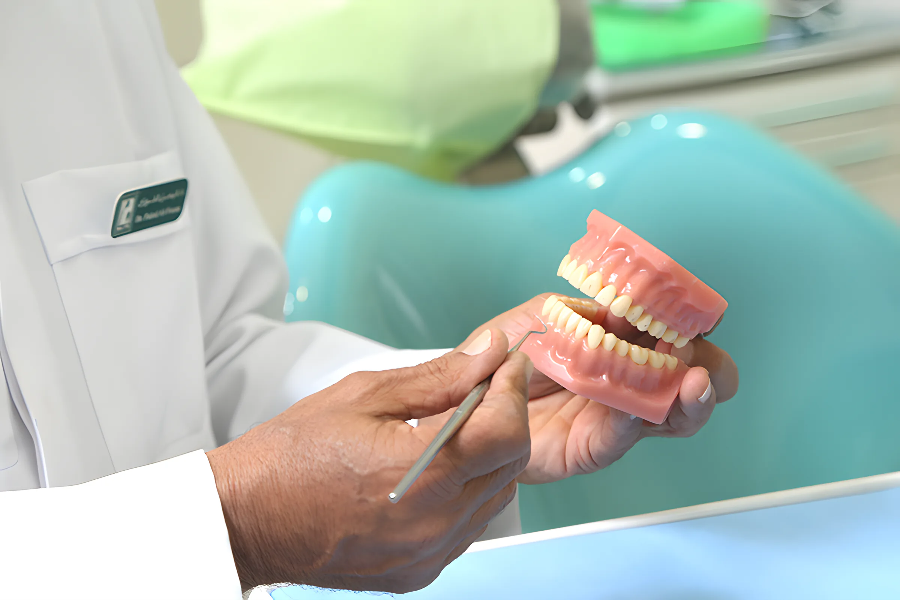
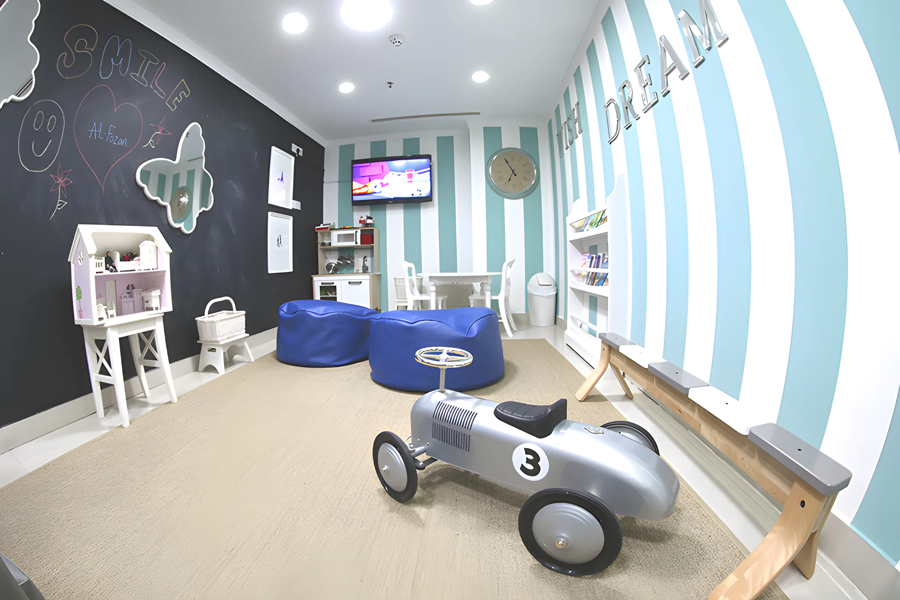
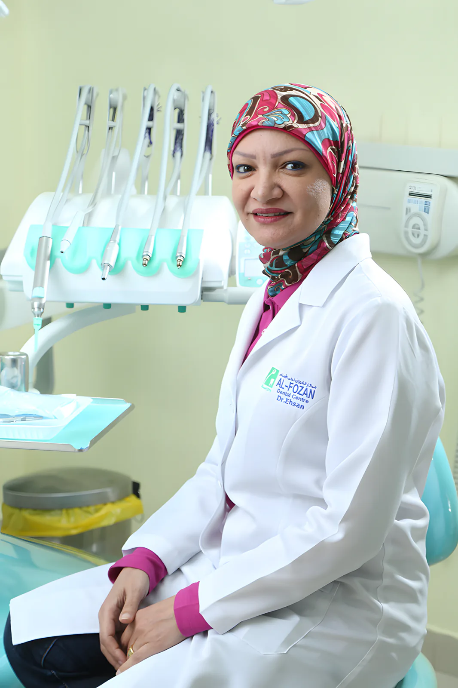
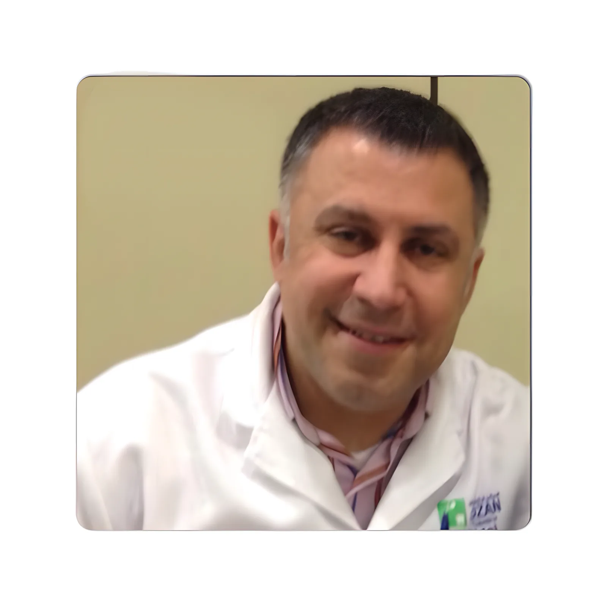
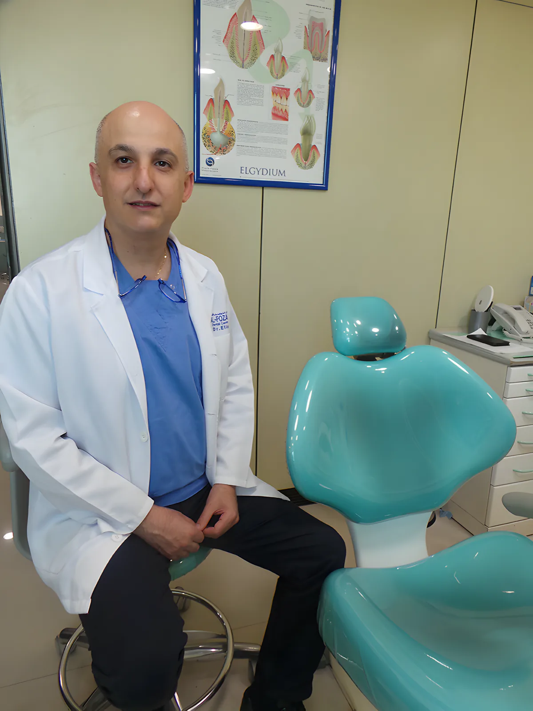
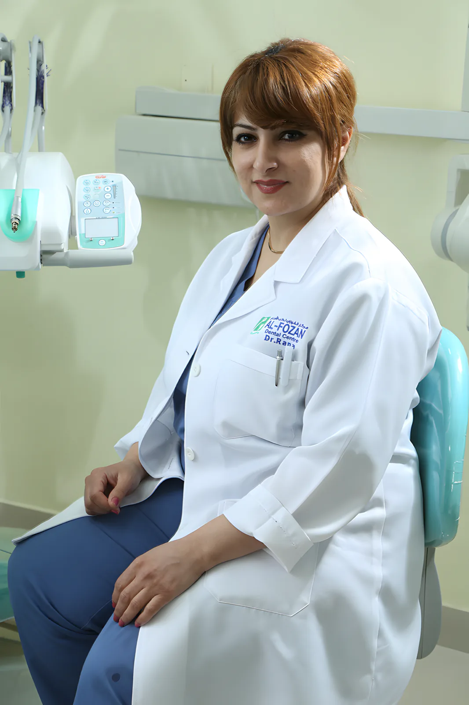
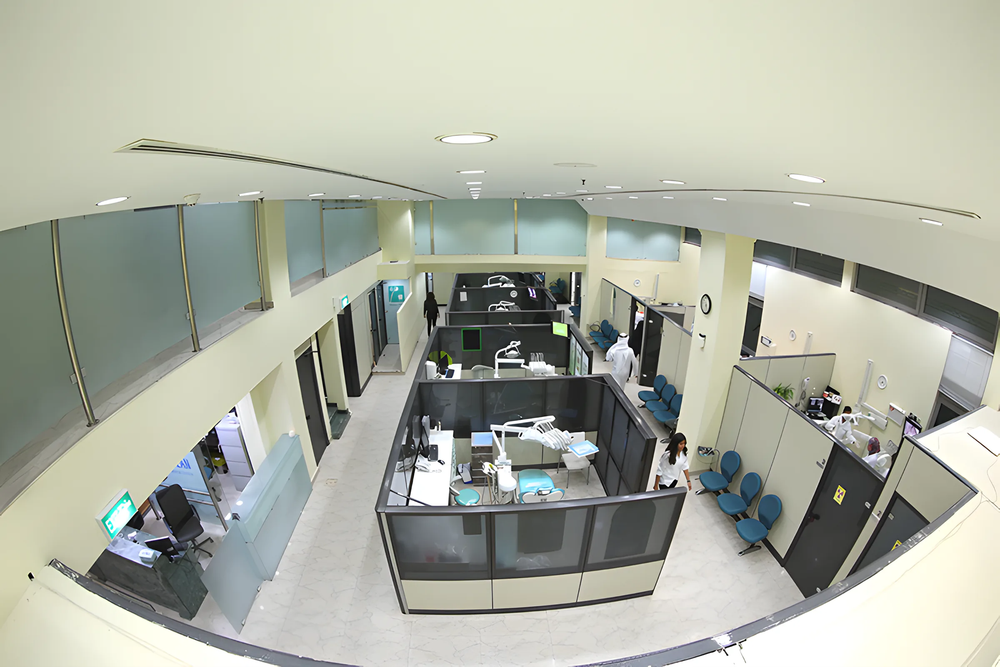
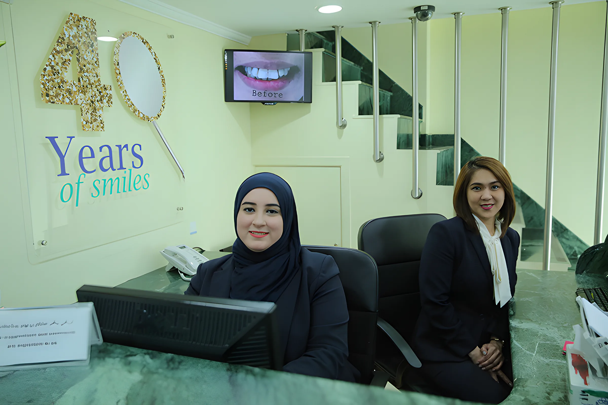

Dr. Tahani Al Musallam
استشارية تقويم الأسنان
افتتح الدكتور فيصل الفوزان العيادة سنة 1976. واليوم، بعد خمسين سنة، يستقبل أطباؤنا العائلات في الدور السابع من مجمع الأندلس في حولي: فحص وتنظيف، تقويم، زراعة، تيجان، وقسم خاص للأطفال.

افتتح الدكتور فيصل الفوزان أول عيادة أسنان خاصة في الكويت سنة 1976، ويواصل مركز الفوزان لطب الأسنان المسيرة اليوم بفريق من أطباء الأسنان العامين وأخصائيي التقويم والتركيبات وعلاج الجذور.
الفحص والعلاج والأشعة والمختبر، كلها في مركز واحد في حولي.
نفخر باختياركم لنا لأجيال عديدة
العبارة المكتوبة على واجهة عيادتنا
أربع عشرة خدمة تحت سقف واحد. اضغطوا على أي خدمة لتعرفوا ماذا تتضمن، أو شوفوا صفحة الخدمات كاملة.



نبدأ بالأشعة والطبعات، ثم تُزرع الدعامة والمنطقة مخدّرة وتُترك لتلتحم بالعظم قبل تركيب السن. تحتاج عدة زيارات على مدى أشهر.

أربعة من أطبائنا متخصصون في التقويم. يعالجون الأسنان الملتوية والمزدحمة، والبروز، وعضة الفك السفلي، ووضع الفك، بالتقويم الثابت أو المتحرك.

اثنا عشر طبيباً وطبيبة يعملون مع مؤسس المركز الدكتور فيصل الفوزان: أطباء أسنان عامون، وأخصائيو تقويم وتركيبات، وأخصائي علاج جذور. اطلبوا أي طبيب بالاسم عند الاتصال على 1801033.
استشارية تقويم الأسنان

استشارية تركيبات الأسنان

أخصائي تقويم الأسنان

أخصائي تقويم الأسنان

أخصائي علاج الجذور

أخصائي تركيبات الأسنان
أخصائية تركيبات الأسنان

طبيبة تقويم مسجلة

طبيب أسنان عام

طبيبة أسنان عامة

طبيب أسنان عام

طبيب أسنان عام
للأطفال غرفة انتظار خاصة فيها سيارة لعبة وكراسي إسفنجية وجدار للرسم بالطباشير، وغرفة علاج مخططة مصممة لهم. نحرص أن تكون الزيارة الأولى سهلة، ونركز على الوقاية قبل أن يبدأ التسوس.

اسحبوا الصور وتعرّفوا على المكان قبل زيارتكم الأولى.




الدور السابع، مجمع الأندلس، شارع بيروت، حولي، الكويت
اطلعوا بالمصعد في مجمع الأندلس إلى الدور السابع، وواجهتنا الزجاجية بشعار الفوزان الأخضر على الممر.